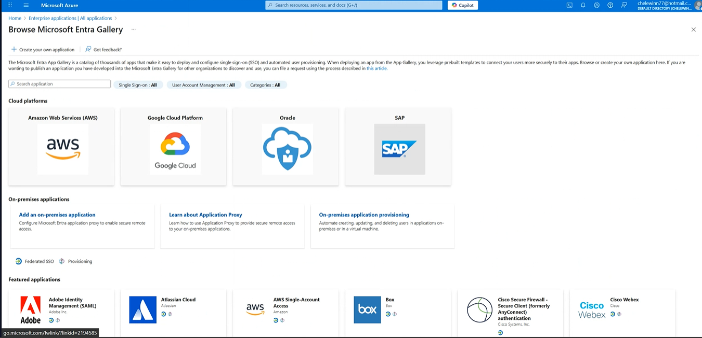
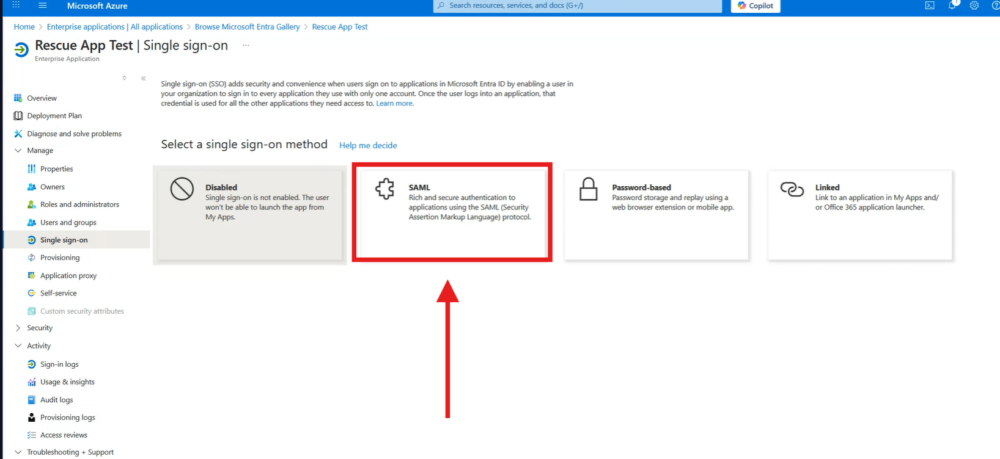

SSO Rescue Guide
This is a quick guide how to set up Rescue SSO now that is self service
main article : Introduction to Rescue SAML 2.0
How to get Compnay ID
- Log in to the Rescue Admin Console.
Admin console
- Go to the upper right corner and click on → Global Settings.
- Upper rifht side to Global Settings
- Scroll dow untill you find ↓ Single Sign-On
- On con example slide to right → to find company ID
-
- Company ID look like this CompanyID=3281466
How To Know the type of Customer
Important:
This step is crucial because, before proceeding with account configuration, we need to clearly identify the type of account we are dealing with. Failing to do so can result in providing the incorrect configuration links to the client.
-
check on Backoffice
-
on backoffice ➡️ settings ➡️ Special Flag ➡️ Enterprice account ✅
-
-
With that information, we should be able to determine the customer type, as well as whether they are in the EU or the US
- Global customer US
- Global Enterprise customers US
- Customers based in the European Union
- Enterprise customers based in the European Union
Configuring LogMeIn Rescue SAML 2.0 with Azure Active Directory
- Log in to portal.azure.com
- on Azure portal
-
-
At the top of the page, there is a search bar. You can search for the keyword "Enterprise applications", or you can look for the icon with the same name ("Enterprise applications") in the Azure Services menu further down on the same screen.
-
- Enterprise Applications ➡️ New application .
-
- The Add an application menu is displayed ✅
-

- Select ➡️ + create your own application
- Enter a name for the new application ‚û°Ô∏è click "Add" ✅. üí° Leave all other settings at their default values.
- now your aplication is created you should see this screen ✅
- on Single sign-on ➡️ SAML-based sign-on.
- Select ➡️ SAML-based sign-on.
- 
- Under Basic SAML Configuration,set the following values:
- select Edit
✅ Completed
➡️ Next step
⬅️ Go back
⬆️ Scroll up
⬇️ Scroll down